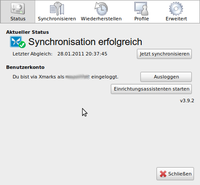
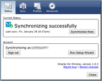
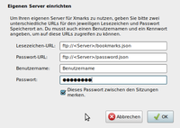

Xmarks
Achtung!
Da von Firefox alle sechs Wochen eine neue Version erscheint, kann dieser Artikel leider nicht – wie sonst in diesem Wiki üblich – mit einer bestimmten Ubuntu-Version getestet werden. Die Mozilla-Entwickler behalten sich vor, jederzeit neue Funktionen hinzuzufügen oder vorhandene wieder aus dem Programm zu entfernen. Unter solchen Umständen ist es nicht möglich, die Korrektheit der in diesem Artikel beschriebenen Informationen dauerhaft für eine Ubuntu-Version zu garantieren.
Xmarks  ist eine Erweiterung für verschiedene Internetbrowser (unter anderem Firefox und Chromium), welche vor allem die Synchronisation von Lesezeichen gestattet. Diese Daten können entweder in einem eigenen Zugang auf xmarks.com hinterlegt oder auf einem eigenen FTP-Server abgelegt werden - mitunter auch im eigenen Router. Letzteres hat den Vorteil, dass man weiß, wo die eigenen Daten liegen. Die Lesezeichen können somit mit verschiedenen Computern abgeglichen werden. Hier ist die Erweiterung auf beiden Systemen zu installieren.
ist eine Erweiterung für verschiedene Internetbrowser (unter anderem Firefox und Chromium), welche vor allem die Synchronisation von Lesezeichen gestattet. Diese Daten können entweder in einem eigenen Zugang auf xmarks.com hinterlegt oder auf einem eigenen FTP-Server abgelegt werden - mitunter auch im eigenen Router. Letzteres hat den Vorteil, dass man weiß, wo die eigenen Daten liegen. Die Lesezeichen können somit mit verschiedenen Computern abgeglichen werden. Hier ist die Erweiterung auf beiden Systemen zu installieren.
|  |  |
| Firefox-Erweiterung | Chromium-Erweiterung |
Installation¶
Eine Übersicht über die Unterstützten Browser und die jeweiligen Funktionen findet sich auf der Downloadseite  des Projektes.
des Projektes.
Firefox¶
Im Firefox die Seite addons.mozilla.org  aufrufen und dort "Zu Firefox hinzufügen" wählen. Nach der Installation der Erweiterung muss der Browser erneut gestartet werden.
aufrufen und dort "Zu Firefox hinzufügen" wählen. Nach der Installation der Erweiterung muss der Browser erneut gestartet werden.
Chromium¶
Mit Chromium die Seite chrome.google.com/extensions aufrufen und dort "Installieren" wählen. Nach der Installation muss die Erweiterung eventuell noch unter "Chromium anpassen -> Tools -> Erweiterungen -> Xmarks Bookmark Sync -> Aktivieren" aktiviert werden.
Konfiguration¶
Das Einstellungsmenü des Plugin erreicht man in
Firefox über "Extras -> Xmarks -> Xmarks-Einstellungen"
Chromium über " -> Xmarks Settings"
Xmarks-Server¶
Bei der ersten Verwendung findet sich im Reiter "Status" nur eine Schaltfläche ("Einrichtungs-Assistent starten" bzw. "Run Setup Wizard"). Diese bietet die Möglichkeit, ein Benutzerkonto für die Synchronisation mit dem Xmarks-Server anzulegen bzw. bei bestehendem Konto den Benutzernamen und das Kennwort zu hinterlegen und ggf. von der Erweiterung merken lassen. Soll die Synchronisation automatisch erfolgen, ist unter "Synchronisation" bzw. "Sync" die gewünschte Option aktivieren.
|  |
| eigenen Server verwenden |
FTP-Server¶
Unter Firefox bietet Xmarks die Möglichkeit, die Daten auf einen FTP-Server zu speichern.
Hinweis:
Da die Erweiterung unter Chromium dies nicht unterstützt, können Lesezeichen beider Browser nicht auf diese Art und Weise synchronisiert werden.
Um die Verwendung eines eigenen Servers mit Xmarks einzurichten, im Tab "Erweitert" die Daten zum verwendeten FTP-Server hinterlegen, nachdem "Eigenen Server verwenden" angewählt wurde.
Die Daten nach folgendem Muster hinterlegen:
Lesezeichen-URL:
ftp://<Server>/bookmarks.json
Bedienung¶
Alle Funktionen sind über "Extras -> Xmarks" (Firefox) bzw. über das Xmarks-Icon (Chromium) zu erreichen.
 Übersichtsartikel
Übersichtsartikel- Erstellt mit Inyoka
-
 2004 – 2017 ubuntuusers.de • Einige Rechte vorbehalten
2004 – 2017 ubuntuusers.de • Einige Rechte vorbehalten
Lizenz • Kontakt • Datenschutz • Impressum • Serverstatus -
Serverhousing gespendet von